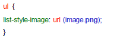

- Principe des CSS
- Format CSS
- Appel d’un fichier .css
- Directement dans le header du fichier HTML
- Appliquer un style à des balises
- Exemple CSS
- Des commentaires dans CSS
- Utiliser les classes
- L'attribut id
- Les balises universelles
- Exemple
- Imbrications de balises
- Taille du texte
- Polices
- Exemple
- Alignement simple
- L'indentation: la mise en retrait du texte
- Effets de style
- Les majuscules en CSS
- La décoration
- Les couleurs
- La notation hexadécimale
- La méthode RGB (Red-Green-Blue)
- Le fond
- La couleur de fond
- Exemple
- L'image de fond
- Effets sur les liens
- Les pseudo-formats
- Au passage de la souris
- Au moment du clic
- Première lettre et première ligne
- Retrait des listes
- Exemple
- Représentation de la puce
- Pour les listes non ordonnées (ul)
- Pour les listes ordonnées (ol)
- Changer l’image de la puce
- Dimensionnement et positionnement
- Mise en page
- Tableaux
- Formulaires
- Exemple
Représentation de la puce
La propriété list-style-type vous permet de changer l’apparence de la puce.
- Pour les listes non ordonnées (ul)
disc : un disque noir (par défaut).
circle : un cercle.
square : un carré.
none :aucune puce ne sera utilisée.
- Pour les listes ordonnées (ol)
decimal :des nombres 1, 2, 3, 4, 5... (par défaut)
decimal-leading-zero :des nombres commençant par zéro (01, 02, 03, 04,05...). Ne fonctionne pas sur Internet Explorer
upper-roman :numérotation romaine, en majuscules (I, II, III, IV, V...)
lower-roman :numérotation romaine, en minuscules (i, ii, iii, iv, v...)
upper-alpha :numérotation alphabétique, en majuscules (A, B, C, D, E...)
lower-alpha : numérotation alphabétique, en minuscules (a, b, c, d, e...)
lower-greek :numérotation grecque. Ne fonctionne pas sur Internet Explorer
Changer l’image de la puce
La propriété list-style-image vous permet d'utiliser n'importe quelle image à la place d’une puce.

Dimensionnement et positionnement
Tout élément CSS se comporte comme une imbrication successive de 4 boîtes :
• La boîte externe est l’aire de marges. Elle occupe l’espace transparent entre le bord de l’écran (ou d’un autre élément) et l’élément actif.
• À l’intérieur de l’aire de marges se trouve l’aire de bordures. Gérée par la propriété border, elle représente les bordures affectées à l’élément actif.
• Ensuite, l’aire d’espacement : la surface entre le contenu et la limite intérieure de la bordure. Elle est gérée par la propriété padding.
• Enfin, la boîte la plus intérieure est la boîte de contenu. Elle renferme le contenu de l’élément actif.